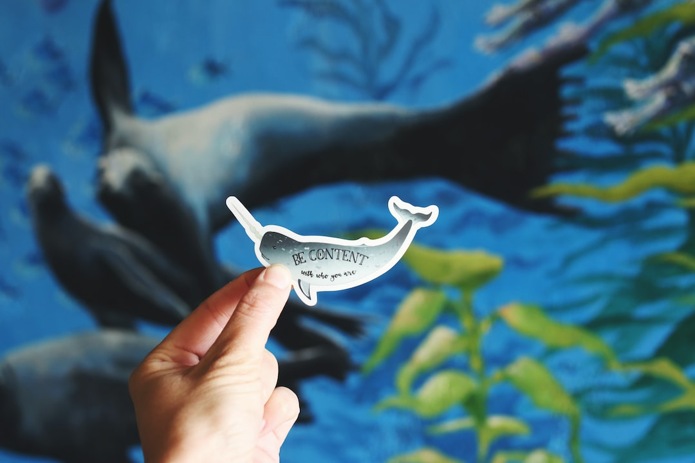

The Power of Social
Media Advertising: How
to Reach Your Target
Audience
Social media has become an integral part of our daily lives, and its impact on advertising is undeniable. With billions
of people using platforms like Facebook, Instagram, and Twitter, social media advertising has become a powerful tool
for businesses to reach their target audience. In this blog post, we will explore the various strategies and techniques you
can use to effectively leverage social media advertising to connect with your desired customers.
3. Craft compelling and relevant content
Once you know your target audience and the platforms you'll be using,
it's time to create content that will resonate
with your audience.
Your content should be informative, engaging, and visually appealing.
Use high-quality images,
videos, and graphics to capture your
audience's attention and communicate your message effectively.

5. Monitor and optimize your campaigns
Once your social media advertising campaigns are live, it's important
to continuously monitor their performance and make
adjustments as needed.
Track key metrics such as click-through rates, conversions,
and engagement to gauge the
effectiveness of your campaigns. Use this
data to optimize your ads, targeting, and messaging to improve
results over
time.
In conclusion, social media advertising offers immense opportunities to connect with your target audience and drive
business growth. By defining your audience, choosing the right platforms, creating compelling content, utilizing
targeting options, monitoring and optimizing your campaigns, engaging with your audience, collaborating with
influencers, and analyzing your results, you can maximize the power of social media advertising and achieve your
marketing goals.